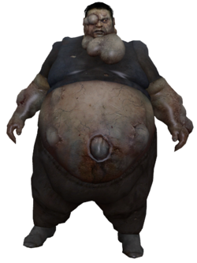
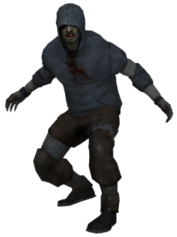
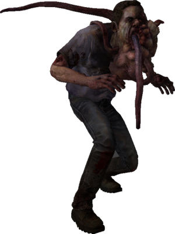
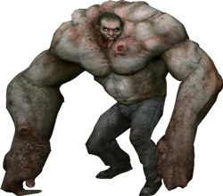
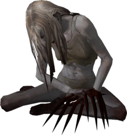
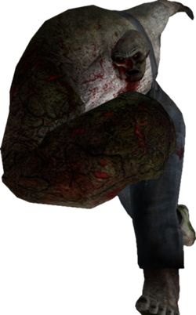
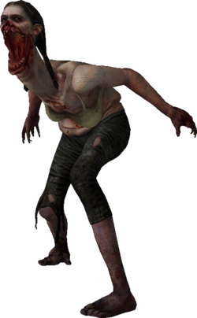
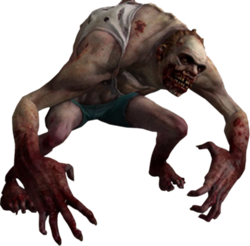

While also referred to as zombies, the Infected are humans who have contracted a mutated strain of a virus, though neither the source nor nature of this "Green Flu" are made clear in the games. The most numerous Infected encountered by the survivors are the Common Infected. Though individually weak, they can swarm and overwhelm the Survivors, especially if they are separated. Damage to the infected in Left 4 Dead 2 is portrayed more realistically, with bullets and melee weapons ripping off bits of flesh and, in some cases, limbs. A new addition to Left 4 Dead 2 is the Uncommon Infected unique to each campaign. By virtue of location and equipment worn pre-infection, they possess abilities that separate them from the Common Infected. For example, the Dead Center campaign introduces infected CEDA agents in hazmat suits, making them fireproof;[18] Dark Carnival includes clowns, whose squeaking attractes small hordes of Common Infected;and The Parish includes Infected security personnel in riot gear, making them bulletproof from the front.
As in the first game, there are Special Infected whose mutations grant them special abilities that make them highly dangerous. The presence of such Infected nearby is hinted at by sound effects or musical cues unique to each type. The five Special Infected from the first game return in Left 4 Dead 2, some with modified behavior and skin models:
a bloated Infected whose bile blinds any Survivors hit with it, as well as attracting a horde of Common Infected towards them.
an agile male Infected that can pounce on Survivors from great distances and tear at them until the Survivor dies or another Survivor shoves it off/kills it.
an male Infected that can ensnare Survivors with its long tongue from a distance and, upon death, releases a cloud of smoke that obscures Survivors' vision.
a gigantic, muscular Infected male that can punch Survivors several feet, and toss cars and concrete slabs. Unless the Survivors work as a team, they will be quickly incapacitated or even killed by the Tank's inhuman strength.
a crying Infected woman who, when provoked by loud sounds, light, or proximity of survivors, will attack her provoker—she is able to incapacitate or even kill in one hit.Left 4 Dead 2 introduces a variant of the Witch that wanders aimlessly in the open.
an male Infected with an enormous right arm, and can charge into the Survivors and separate one Survivor from the others whilst pummeling them into the ground, rendering the Survivor helpless until one of their teammates helps them.
an female Infected that spits out balls of stomach acid that splatter across an area, quickly eroding the Survivors' health as long as they remain within it; the longer a player loiters, the faster their health drops.
an maniacal male Infected that jumps onto a Survivor's back and steer them into other Infected or environmental hazards (e.g. Spitter goo), whilst clawing at the player's head.
Jamell Winn 2012 ©